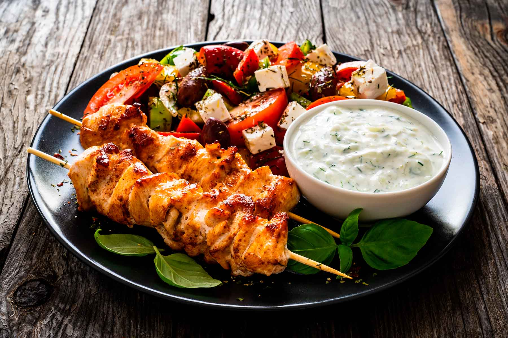

Souvlaki is one of the most iconic dishes of Greek cuisine, with a history that dates back thousands of years. Its origins can be traced to Ancient Greece, where archaeological findings show that people cooked small pieces of meat on skewers over open fires, a method known for its simplicity and practicality. This early form of souvlaki was mainly associated with daily life and communal meals, reflecting the close relationship between food and social interaction in Greek culture.
Over the centuries, souvlaki evolved alongside Greek society. During the Ottoman period and later in modern Greece, new seasonings, cooking techniques, and serving styles were introduced. In the 20th century, souvlaki became especially popular as street food, served wrapped in pita bread with tomatoes, onions, fries, and tzatziki sauce. Today, it is enjoyed both in Greece and internationally, with variations that include pork, chicken, lamb, seafood, and vegetarian options, showing how souvlaki has adapted to global tastes while still preserving its traditional roots.
Moussaka is widely considered the most important and iconic dish of Greek cuisine, representing the depth and tradition of the country’s culinary heritage. Its roots can be traced to the Eastern Mediterranean and the Middle East, but the modern Greek version was shaped in the early 20th century. The dish is based on layers of sliced eggplant, minced meat (traditionally lamb or beef), and tomato sauce, all topped with a thick and creamy béchamel sauce. This combination reflects the Mediterranean diet, which emphasizes fresh vegetables, olive oil, and balanced flavors.
The version of moussaka known today was popularized by the Greek chef Nikolaos Tselementes, who introduced the French-style béchamel sauce to Greek cooking. This addition gave the dish a richer texture and helped standardize its preparation across Greece. Moussaka is typically baked until golden and served hot, often as a main course during family gatherings, holidays, and special occasions. Its preparation can be time-consuming, which is why it is closely associated with home cooking and tradition rather than fast food.
Today, moussaka is recognized internationally as a symbol of Greek cuisine. While the classic recipe remains the most popular, there are regional and modern variations, including versions with potatoes, zucchini, or vegetarian fillings. Despite these adaptations, moussaka continues to represent Greek identity, hospitality, and the importance of sharing meals, making it not only a dish but also a cultural expression of Greece’s history and way of life.
3C
Renata Quiñones.
Isabella Santoyo
Luis Mireles
Diego Rivero
Emilio Zermeño
Mteo Castañeda